BIO 5 · Human Biology · Fall 2026 · Whalen
Week 15 — Respiratory & Urinary Systems
Each source keeps its own tab; the last tab blends them into one account of the week.
Deadlines this week
-
Mon 11/16
Readings: Ch. 14 · Ch. 16
read before the week's lectures -
Mon 11/16
Board work sheet
handed in at the start of lab -
Fri 11/20
11:59pm Mastering Biology DSM: CH 14 & CH 16
2 pts -
Fri 11/20
11:59pm WK 15 Practice Test
5 pts -
Fri 11/20
11:59pm Lab 14 document — 10 pts
Lab 14: Respiratory · Lab 14 Quiz, 15 pts -
Fri 11/20
11:59pm Lab 15 document — 10 pts
Lab 15: Urinary & Urine Formation · Lab 15 Quiz, 15 pts
This week's lab
- Lab 14 — Respiratory
Monday 11/16
Coming up
- Week 16 — Reproductive System & Development
Nov 23–27, 2026
Chapter 14 — The Respiratory System
Captured from the Pearson eText. pp. 268–285.
- 14.1 Structures of the Respiratory System
- 14.2 Mechanism of Breathing
- 14.3 Transport of Gases between the Lungs and the Cells
- 14.4 Respiratory Centers in the Brain
- 14.5 Respiratory Disorders
Did you know
- The average person takes 17,280 to 23,040 breaths a day.
- The world record for hiccupping is 68 years.
- Air leaving a sneeze can travel 100 miles per hour.
Opening
The circulatory system carries oxygen to the cells and carbon dioxide to the lungs; this chapter is the respiratory system's half of that job — getting oxygen in and carbon dioxide out. It follows inhaled air to the lungs, the mechanics of breathing, gas transport between lungs and cells, the control of breathing, and respiratory disorders. (p. 268)
The chapter as one chain
- Why breathe — oxygen lets cells get 18 times more ATP from food; the same reactions make CO₂, which forms carbonic acid, so respiration also sets body-fluid acidity.
- Respiration is four processes — breathing, external respiration (lungs ↔ blood), gas transport, internal respiration (blood ↔ tissue cells).
- The airway conditions air on the way in — nose and sinuses filter, warm and moisten; the larynx admits air but not food and makes the voice; cartilage holds the tubes open down to the bronchioles; ~300 million alveoli, kept open by surfactant, are the exchange surface.
- Breathing is pressure following volume — enlarge the chest, lung pressure falls, air flows in; quiet exhalation is elastic recoil.
- Gases diffuse down partial-pressure gradients — O₂ rides on hemoglobin; CO₂ rides mostly as bicarbonate, a carbonic-anhydrase reaction that also buffers the blood.
- The medulla sets the rhythm; CO₂ sets the rate — rising CO₂ means rising H⁺; oxygen matters only when dangerously low.
- What goes wrong — infections, cystic fibrosis, and the smoking diseases: chronic bronchitis, emphysema and lung cancer.
14.1Structures of the Respiratory System
pp. 269–274Why we need oxygen, and the four processes
- Without oxygen we die within minutes. Cells store food energy as ATP; a little can be made without oxygen, but cells make 18 times more ATP when oxygen is present (Ch. 3). The same reactions produce carbon dioxide, which in solution forms carbonic acid, harmful to cells.
- The respiratory system supplies oxygen and disposes of carbon dioxide; the exchange also regulates the acidity of body fluids.
- Four processes:
- Breathing (ventilating) — oxygen-rich air into the lungs, CO₂-laden air out.
- External respiration — O₂ and CO₂ exchanged between the lungs and the blood.
- Gas transport — the blood carries O₂ to the cells and CO₂ to the lungs.
- Internal respiration — O₂ and CO₂ exchanged between the blood and tissue cells; the cells use O₂ in cellular respiration to yield ATP and CO₂.
- The upper respiratory system is the nose (nasal cavities) and pharynx; the lower is the larynx, epiglottis, trachea, bronchi, bronchioles and lungs.


| Structure | Description | Function |
|---|---|---|
| Upper respiratory system | ||
| Nasal cavity | Cavity within the nose, divided into right and left halves by nasal septum; has three shelflike bones | Filters and conditions (moistens and warms incoming air); olfaction (sense of smell) |
| Sinuses | Large air-filled spaces in the bones of the face | Lessen the weight of the head; warm and moisten inhaled air |
| Pharynx (throat) | Chamber connecting nasal cavities to esophagus and larynx | Common passageway for air, food, and drink |
| Epiglottis | Flap of tissue reinforced with cartilage | Covers the glottis during swallowing |
| Larynx | Cartilaginous, boxlike structure between the pharynx and trachea that contains the vocal cords and the glottis | Allows air but not other materials to pass to the lower respiratory system; source of the voice |
| Lower respiratory system | ||
| Trachea | Tube reinforced with C-shaped rings of cartilage that leads from the larynx to the bronchi | The main airway; conducts air from larynx to bronchi |
| Bronchi (primary) | Two large branches of the trachea reinforced with cartilage | Conduct air from trachea to each lung |
| Bronchioles | Narrow passageways leading from bronchi to alveoli | Conduct air to alveoli; adjust airflow in lungs |
| Lungs | A pair of elastic structures within the thoracic (chest) cavity containing surfaces for gas exchange | Exchange oxygen and carbon dioxide between blood and air |
| Alveoli | Microscopic sacs within lungs, bordered by extensive capillary network | Provide immense internal surface area for gas exchange |

which region the larynx and epiglottis belong to; the §14.1 text puts only the nose and pharynx in the upper respiratory system and lists the larynx and epiglottis in the lower, while Table 14.1 lists Epiglottis and Larynx under "Upper respiratory system" and Figure 14.2 groups them under its "UPPER RESPIRATORY SYSTEM" heading.
Nose and sinuses
- The nasal septum (cartilage and bone) divides the inside of the nose into two nasal cavities. Three shelflike bones fill much of each cavity, increasing surface area and splitting it into three narrow air passages. Moist mucous membrane lines it all.
- The nose has three functions:
- Filtration and cleansing. Hairs stop the largest particles. Lining cells make mucus, which traps dust; cilia sweep the mucus, dirt and bacteria to the throat to be swallowed (and destroyed by digestive enzymes) or coughed up. Particles that reach the lungs are engulfed by macrophages, large wandering cells on the lung surfaces. If too many are inhaled or removal fails, they cover exchange surfaces and set the stage for infection.
- Conditioning the air. Capillary blood in the nasal lining warms and moistens incoming air (why a punched nose bleeds so much). Frigid air can kill delicate lung cells, and oxygen cannot cross dry membranes.
- Olfaction. Olfactory receptors lie high in the nasal cavities (Ch. 9).
- Sinuses — air-filled spaces in the facial bones, connected to the nasal cavities. They lighten the head, help warm and moisten air (they too are lined with mucous membrane), and form part of the voice's resonating chamber — why a cold muffles the voice. They normally drain into the nasal cavities.
- Sinusitis — inflamed sinus membranes swell and block drainage; the trapped fluid causes pain over the eyes or in the cheeks or jaws, a sinus headache. Caused by the cold virus or a later bacterial infection. Decongestant sprays shrink the swelling but can create dependence if overused.
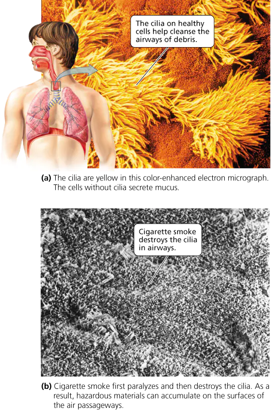
Pharynx and larynx
- Pharynx — the throat: the space behind the nose and mouth, a passage for air, food and drink. The auditory (Eustachian) tubes connect it to the middle ear and equalise pressure there.
- Larynx — the voice box or Adam's apple, a boxlike structure mainly of cartilage. Two functions:
- A selective entrance to the lower tract. The esophagus lies behind the larynx, so food must pass over its opening. Solids could lodge in an airway; fluid could cover exchange surfaces. During swallowing the larynx rises and the epiglottis, a flap of cartilage, moves down to form a lid over the glottis, the opening in the larynx through which air passes — so you cannot breathe and swallow at once. Food in the trachea is usually coughed out; if it lodges, the Heimlich maneuver can dislodge it.
- Voice. The vocal cords — two thick strands of tissue stretched over the glottis — vibrate as air passes between them when muscles draw them across the passage. The sound resonates in the nose, mouth and pharynx, which largely sets voice quality. Pitch rises with tension: stretched cords are thinner and tighter (like a stretched rubber band). In laryngitis the cords swell and thicken, cannot vibrate freely, and the voice deepens or fails.


Trachea, bronchial tree, alveoli and lungs
- Trachea — the windpipe, held open by C-shaped cartilage rings you can feel just below the larynx. The open ends face the esophagus so it can expand against the trachea when a large mass of food is swallowed. Without the rings, the drop in pressure from fast-moving air would collapse it (the shower curtain drawn inward by running water).
- Bronchial tree — the trachea divides into two primary bronchi, one per lung; they branch repeatedly into bronchioles, which end in alveoli.
- Cartilage holds every bronchus open but decreases as the tubes narrow. Bronchioles have no cartilage; their walls are smooth muscle under autonomic control, so airflow can match metabolic need (Ch. 8).
- Asthma — recurring attacks of wheezing and difficult breathing as bronchial muscles spasm, worsened by chronic airway inflammation. Triggers: allergies (pollen, dander, dust-mite feces), infections, certain drugs, irritant inhalants, vigorous exercise, stress, or nothing apparent. Some inhalants relax the bronchial muscle; others are steroids that reduce inflammation.
- Alveoli — each bronchiole ends in an alveolus or, more often, a grapelike cluster: thin-walled chambers wrapped in capillaries. O₂ diffuses into the blood; CO₂ diffuses into alveolar air.
- Surfactant — phospholipid coating that keeps the alveoli open by disrupting surface tension, the attraction between water molecules that would otherwise pull the moist walls together.
- Surfactant production starts in the eighth month of fetal life. Premature babies without enough get respiratory distress syndrome (RDS) — alveoli collapse after each breath; some die, many are saved by respirators and artificial surfactant.
- Lungs — bronchi, bronchioles, alveoli and blood vessels. Right lung three lobes, left two; the left has a notch for the heart. Mostly alveoli — more like foam rubber than a balloon: about 300 million alveoli per lung give 70–80 m² of surface, about 8500 times a hollow balloon of the same size (0.01 m²).
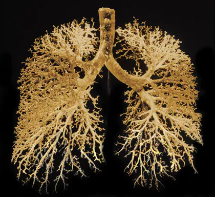
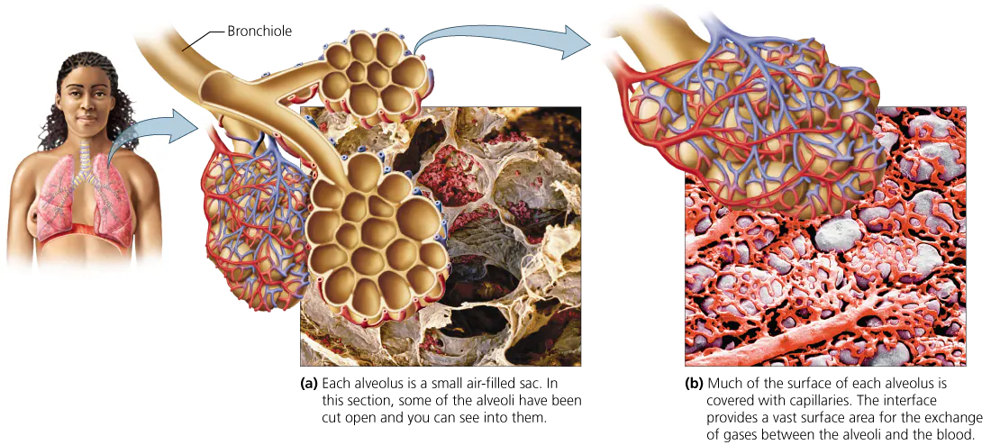
14.2Mechanism of Breathing
pp. 275–276Inhalation and exhalation
- Air flows into the lungs when atmospheric pressure exceeds lung pressure, and out when lung pressure exceeds atmospheric.
- Chest volume changes lung volume because of the pleural membrane — a double-layered sac around each lung, one layer stuck to the thoracic wall, the other to the lung, held together by the surface tension of the fluid between them.
- Inhalation (inspiration) — the diaphragm (broad muscle sheet between the abdominal and thoracic cavities) and the intercostal muscles (between the ribs; costa, rib) contract.
- The intercostals pull the rib cage up and out — the cavity grows front to back.
- The diaphragm is dome-shaped when relaxed and flattens when it contracts — the cavity grows top to bottom.
- Lung pressure drops below atmospheric; air rushes in.
- Exhalation (expiration) — usually passive. The muscles relax; the elastic lungs recoil; the rib cage falls and the diaphragm bulges up. Lung pressure rises above atmospheric; air moves out.
- Forced exhalation (heavy breathing, coughing) adds a second layer of rib muscles, pulling the cage further down and in, and the abdominal muscles, which push the organs up against the diaphragm.

Lung volumes
- Volumes vary with sex, age and height; a spirometer measures them.
- Tidal volume — air in or out in a normal breath, about 500 ml (1 pint).
- Inspiratory reserve volume — extra air you can inhale after a normal breath in, 1900–3300 ml — four to seven times a quiet breath.
- Expiratory reserve volume — extra air you can force out after a normal breath out, about 1000 ml.
- Reduced in obstructive lung diseases such as bronchitis and asthma. World Trade Center rescue workers lost expiratory reserve in the year after 9/11 — presumably from toxic dust — equal to 12 years of aging, worst in those there as the towers fell.
- Vital capacity — the most air moved in one forced breath = tidal + inspiratory reserve + expiratory reserve. About 4800 ml in college-age men, 3400 ml in women; varies with health and fitness. Pneumonia lowers it (fluid in the alveoli).
- Residual volume — air that stays after the hardest exhalation, 1100–1200 ml; the lungs never empty. Emphysema raises it — broken-down alveoli form large spaces that are hard to empty, and the stale, low-oxygen air leaves the person short of breath.
- Total lung capacity = vital capacity + residual volume: about 6000 ml in men, 4500 ml in women.

14.3Transport of Gases between the Lungs and the Cells
pp. 277–278Oxygen
- External respiration happens in the alveoli, gas transport in the blood, internal respiration in the tissues.
- About 98.5% of the oxygen reaching cells is bound to hemoglobin, a protein in red blood cells, as oxyhemoglobin (HbO₂); 1.5% is dissolved in plasma. Whole blood carries 70 times more oxygen than plasma alone.
- Whether hemoglobin binds or releases O₂ depends mainly on the partial pressure of oxygen — the share of a gas mixture's total pressure exerted by one gas, directly related to its concentration. Gases diffuse from higher to lower partial pressure (Ch. 3): hemoglobin loads O₂ in the alveoli, where it is high, and unloads it near the cells, where it is low.
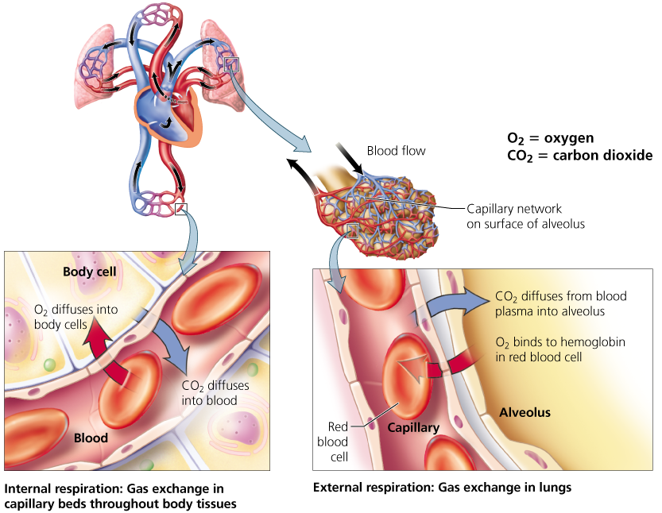
Carbon dioxide
- CO₂ travels three ways:
- dissolved in plasma — 7–10%;
- on hemoglobin — slightly more than 20%, as carbaminohemoglobin;
- as bicarbonate ions in plasma — about 70%, by far the most.
- In the tissues, CO₂ diffuses into the blood and red cells and reacts with water to form carbonic acid (H₂CO₃), which quickly dissociates to H⁺ and bicarbonate (HCO₃⁻).
- The reaction runs in plasma too but hundreds of times faster in red blood cells, which contain carbonic anhydrase — plasma does not.
- The H⁺ binds hemoglobin, which therefore acts as a buffer: blood acidity barely changes.
- Bicarbonate diffuses out into the plasma and travels to the lungs.
- In the lungs, CO₂ diffuses into the alveoli, where its partial pressure is lower, so the reactions reverse: bicarbonate and H⁺ re-form carbonic acid, carbonic anhydrase converts it to CO₂ and water, and the CO₂ is exhaled.
- Bicarbonate is also part of the acid–base buffering system: excess H⁺ combines with it to form carbonic acid, which becomes CO₂ and water and is exhaled (Ch. 2).


14.4Respiratory Centers in the Brain
pp. 279The basic pattern
- Quiet breathing runs at 12–15 breaths a minute, set by the breathing (respiratory) center in the medulla, which has an inspiratory area and an expiratory area.
- The inspiratory neurons fire in bouts: while active they contract the diaphragm and intercostals (inhalation); after about 2 seconds they fall silent for about 3 seconds, and passive exhalation follows.
- In heavy breathing the expiratory area contracts other intercostals and the abdominal muscles to push air out fast.
- The cerebral cortex can override the pattern — speaking, sighing, panting, holding your breath underwater or against smoke.
- Stretch receptors in bronchial and bronchiolar walls prevent overinflation: a deep breath stretches them and they signal over the vagus nerve to inhibit the breathing center, allowing exhalation; as the lungs deflate the receptors stop firing.

Chemoreceptors
- Carbon dioxide is the most important chemical controlling breathing rate. It works through the H⁺ formed when it dissolves: CO₂ + H₂O → H₂CO₃ → H⁺ + HCO₃⁻.
- Three groups of chemoreceptors respond to H⁺:
- central — in the medulla, near its surface, bathed in cerebrospinal fluid; CO₂ diffuses into the fluid, raises H⁺, and stimulates them, so breathing speeds up and CO₂ falls;
- peripheral — in the aortic bodies (on the main artery leaving the heart) and the carotid bodies (on the main arteries to the head). These also respond to low oxygen.
- Oxygen does not affect breathing rate unless it falls dangerously low; only then do the aortic and carotid bodies call on the medulla to speed up. If it falls further, inspiratory neurons die from lack of oxygen, breathing slows, and may stop.


whether the medulla's chemoreceptors sense low oxygen; the §14.4 text says low oxygen is sensed only by the chemoreceptors in the aortic and carotid bodies, while Figure 14.12's label for the medulla oblongata says its chemoreceptors respond to rising CO₂ "and lowered blood level of oxygen".
what the medulla's rhythm generator is called; the §14.4 text calls it the breathing (respiratory) center with inspiratory and expiratory areas, while Highlighting the Concepts (p. 284) calls it the "rhythmicity area". Same structure, two names.
14.5Respiratory Disorders
pp. 280–283Infections
- Common cold — any of 200+ viruses; about 30 million Americans have one at any moment; most people catch their first before age 1.
- Runny nose (thin, then thicker), maybe sore throat, sneezing. Symptoms locate the infection: sneezing and stuffiness the upper tract, sore throat the pharynx, cough the bronchi, hoarseness the larynx.
- Self-limiting, 1–2 weeks; seldom fatal except in the very young, very old or already ill.
- Spread mainly by handling contaminated objects, not inhaling a sneeze: the virus survives hours on skin or objects, and fingers carry it to the nose. Prevention: wash hands often, avoid people with colds.
- Flu (influenza) — far fewer viruses than the cold: hundreds of variants of three types, A, B and C. A is often more serious than B (more complications, more deaths); C is mild.
- Like a cold but more sudden and severe, after several days' incubation: chills, fever about 103°F (39°C), back and muscle aches, headache, sore throat, dry cough, weakness, burning eyes, light sensitivity; 7–10 days, plus a week or more to recover.
- Secondary infections follow — most often pneumonia; also bacterial bronchitis, sinusitis and ear infections.
- Flu shots are only 60–70% effective because the viruses mutate rapidly, so new vaccines are made and shots repeated every year.
- Pneumonia — lung inflammation that fills the alveoli with fluid, cutting gas exchange, and narrows the bronchioles. Usually bacterial or viral (also fungi, protozoans, radiation, chemicals, allergies); often follows a cold or flu. Sudden fever and chills, chest pain, cough, shortness of breath; mild to life-threatening.
- Strep throat — sore throat from Streptococcus bacteria, mainly ages 5–15, with swollen lymph nodes and fever.
- Untreated it can cause rheumatic fever (swollen painful joints, rash; about 60% develop heart-valve disease) or glomerulonephritis — lingering antibodies inflame the kidneys, which may leak blood into the urine.
- Sore throat plus two or three of: fever of 101°F (38.33°C), white or yellow coating on the tonsils, swollen neck glands. Viral sore throats look alike, so only a test for the organism identifies it; it is treated with an antibiotic, usually penicillin, to prevent the complications.
- Tuberculosis (TB) — the rod-shaped bacterium Mycobacterium tuberculosis, spread by inhaling droplets from an infected person's cough. Lungs first, but it can spread anywhere, especially brain, kidneys and bone.
- The body walls it off in fibrous tubercles, which slow but do not kill it; pockets can survive for years.
- If immunity weakens, a secondary stage follows: reactivation, spread in the blood, fever, weight loss, fatigue, and a cough that brings up pus-filled, blood-streaked phlegm. Can be fatal, especially with increasingly common multi-drug-resistant strains (Ch. 13a).
Cystic fibrosis and COPD
- Cystic fibrosis — an inherited single-gene disorder of the lungs and digestive system: thick, sticky mucus clogs airways and traps bacteria (Ch. 20). Treatment controls infection and loosens and removes mucus.
- Chronic obstructive pulmonary disease (COPD) — conditions that make breathing difficult, chiefly bronchitis and emphysema; tobacco is the commonest US cause.
- Bronchitis — inflamed bronchial lining (viruses, bacteria, chemical irritation); excess mucus brings a deep cough with greenish yellow phlegm.
- Acute — often follows a cold, from the cold virus or opportunistic bacteria; antibiotics help only if bacterial.
- Chronic — a productive cough at least 3 months in each of 2 consecutive years, usually from smoking or air pollution; some patients may lack an enzyme that protects the airways. Thickened linings, bronchiole muscle contraction and mucus narrow the airways, mucus clearance fails, and pneumonia and emphysema become likelier.
- Emphysema — alveolar walls break down and merge, so alveoli become fewer and larger: less exchange surface, more residual ("dead") air.
- The lungs lose the elasticity passive exhalation needs, so air is trapped; forcing air in ruptures more walls. The lungs enlarge into a barrel chest while exchange worsens.
- Shortness of breath is the main symptom; later the alveolar walls thicken with fibrous tissue, so oxygen crosses even less well.
- Treatable, not curable: stop smoking, airway-widening medicines, supplemental oxygen.

Lung cancer
- 85–90% of lung cancers are caused by smoking. Usually silent until advanced, so often found too late to cure.
- It begins with chronic inflammation and changes in the airway lining, often from inhaled carcinogens. A nonsmoker's lining is a basement membrane under basal cells and one layer of ciliated columnar cells. In a smoker:
- basal cells multiply into more layers;
- the ciliated columnar cells die and disappear;
- basal-cell nuclei change as mutations accumulate and the cells become disorganised — the start of cancer — and uncontrolled division forms a tumor.
- Once cancer cells break through the basement membrane they can spread through the lung and body — metastasis (Ch. 21a).

Stop And Think
1Very cold temperatures slow the cilia in the nasal cavities. Why can that cause a runny nose? (§14.1, p. 270)
Cilia normally sweep mucus back to the throat; slowed, they let the mucus collect and run out of the nose.
2Pneumonia fills alveoli with fluid and dead white blood cells. Why might this lower blood oxygen? (§14.1, p. 274)
Fluid and debris take the place of air and cover the exchange surface, so less oxygen diffuses into the capillaries.
3Victorian women laced tight whalebone corsets around the waist and lower chest and often fainted. Most likely cause? (§14.2, p. 276)
The corset stopped the rib cage and diaphragm enlarging the chest, so they could not draw a full breath — less oxygen reached the brain.
4Carbon monoxide binds hemoglobin far more readily than oxygen, at the same site. Why can CO poisoning be fatal? (§14.3, p. 278)
98.5% of delivered oxygen rides on hemoglobin; hemoglobin carrying CO cannot carry O₂, so the cells starve of oxygen.
Figure Questions
1What is the path of oxygen from air entering the nose to where it enters the blood? (Figure 14.2, §14.1)
Nasal cavities → pharynx → larynx → trachea → bronchi → bronchioles → alveoli, then into the capillaries.
End Of Chapter Questions
1Choose the correct statement.
a) During quiet breathing, expiration does not usually involve the contraction of muscles. b) Expiration occurs when the diaphragm and the rib muscles contract. c) Expiration occurs as the chest (thoracic) cavity enlarges. d) The larynx acts like a suction pump to pull air into the lungs.
a
Quiet exhalation is passive recoil (§14.2). b and c describe inhalation.
2You should be able to hold your breath longer than normal after you hyperventilate because hyperventilating
a) decreases blood oxygen levels. b) decreases blood carbon dioxide levels. c) increases blood oxygen levels. d) increases blood carbon dioxide levels.
b
CO₂ is the drive to breathe; blowing it off delays the build-up (§14.4). Oxygen (c) matters only when dangerously low.
3Which structure is specialized to produce the sound of your voice?
a) trachea b) larynx c) bronchiole d) epiglottis
b
The vocal cords are in the larynx. The epiglottis only covers the glottis.
4As a molecule of oxygen enters the body and is delivered to the cells, it passes through many structures. Which sequence shows the correct pathway?
a) nose, pharynx, larynx, alveolus, bronchus, trachea b) pharynx, bronchiole, larynx, alveolus, bronchus, trachea c) larynx, pharynx, alveolus, trachea, bronchus d) nose, pharynx, trachea, bronchus, bronchiole, alveolus
d
Trachea → bronchus → bronchiole → alveolus. a–c put the alveolus before the tubes that lead to it.
5What is the most important cue that prompts you to breathe again after holding your breath?
a) the decrease in carbon dioxide levels b) the increase in carbon dioxide levels c) the increase in oxygen levels d) the decrease in oxygen levels
b
Rising CO₂ (as H⁺) stimulates the chemoreceptors. Falling O₂ (d) acts only when dangerously low.
6What is the reason why we must breathe oxygen?
a) Oxygen is broken down to yield energy. b) Oxygen allows us to get more energy (in the form of ATP) out of the food molecules we break down for energy. c) Oxygen stimulates enzyme activity. d) Oxygen is the chemical detected by chemoreceptors that keeps us breathing.
b
Oxygen yields 18 times more ATP from food (§14.1). d is wrong — CO₂/H⁺ is the normal drive.
7Choose the correct statement:
a) Cartilage rings keep the alveoli open. b) The temperature and humidity of the air are adjusted as the air flows through the nasal cavities. c) The larynx changes shape as we speak, creating resonance chambers of different sizes. d) The center of each lung contains a large hollow area in which most of the gas exchange occurs.
b
The nasal lining warms and moistens air. Surfactant, not cartilage, keeps alveoli open (a).
8Choose the incorrect statement about the production of sound called the voice:
a) Speaking sounds are produced when the epiglottis vibrates. b) Thicker vocal cords produce deeper voice sounds. c) Laryngitis results when the vocal cords become swollen and thick and cannot vibrate easily. d) There are only two true vocal cords.
a
The vocal cords vibrate, not the epiglottis. b follows from laryngitis deepening the voice.
9When you swallow food, why does it not usually enter the respiratory system?
a) The Heimlich maneuver prevents it from doing so. b) The bronchioles produce mucus. c) The diaphragm contracts. d) The epiglottis covers the opening to the respiratory system. e) The vocal cords block the opening to the respiratory system.
d
The epiglottis lids the glottis during swallowing. The Heimlich maneuver (a) only removes food already lodged.
10In a healthy person, most of the particles that are inhaled into the respiratory system
a) are trapped in the mucus and moved by cilia to the pharynx (toward the digestive system). b) pass through the alveoli into the circulatory system, where they are engulfed by white blood cells. c) are caught on the vocal cords. d) are trapped in the sinuses.
a
Mucus traps them and cilia sweep them to the throat. Particles reaching the lungs meet macrophages, not the blood (b).
11In emphysema,
a) the number of alveoli is reduced. b) cartilage rings in the trachea break down. c) the diaphragm is paralyzed. d) the epiglottis becomes less mobile.
a
Walls break down and merge into fewer, larger alveoli. The trachea, diaphragm and epiglottis are unaffected.
12The ______ is the flap that covers the trachea to prevent food from entering during swallowing.
epiglottis
Strictly it covers the glottis, the larynx's opening to the trachea (§14.1).
13The enzyme in red blood cells that reversibly converts carbonic acid to bicarbonate ions and hydrogen ions is ______.
carbonic anhydrase
In red cells, not plasma; it speeds the reaction hundreds of times (§14.3). Applying the Concepts — three open questions, p. 285, numbered on.
14Tatyana has iron-deficiency anemia, so her blood does not carry enough oxygen. Would you expect this to affect her breathing rate or tidal volume? Why or why not?
Little or no effect unless her oxygen falls dangerously low.
Breathing rate follows CO₂/H⁺; oxygen acts only when critically low (§14.4). The book does not discuss anemia directly.
15Cigarette smoke destroys the cilia. Why does that make smokers lose more workdays to illness?
Without cilia, mucus, debris and pathogens are not swept out, so infections take hold.
Smoke also paralyses the macrophages, the second line of cleansing (Smoking and Lung Disease).
16During Vincent's asthma attack his bronchioles constrict. Does he have more difficulty inhaling or exhaling? Why?
Exhaling.
Inhalation is muscular; quiet exhalation is only elastic recoil, too weak to push air through narrowed tubes, and obstructive diseases are the ones that cut expiratory reserve (§14.2). The book does not answer this directly.
Boxed essays
Surviving a Common Cold (§14.5, pp. 280-283)
- Vitamin C prevents colds only in the malnourished or extremely stressed, though some takers have milder or shorter colds.
- Zinc may slow viral replication, stop viruses sticking to nasal membranes and boost immunity, but the studies are inconclusive. Echinacea studies conflict.
- Antibiotics do not work on viruses; needless use risks side effects such as diarrhea and breeds resistance (Ch. 13a).
- Bed rest helps fight secondary infections and limits spread but neither cures nor shortens a cold.
- Fluids loosen secretions and ease congestion; hot ones, like chicken soup, raise nasal mucus flow more than cold.
- Questions: should unproven remedies be legal to sell? Should sick days be barred for a cold?
Smoking and Lung Disease (§14.5, pp. 280-283)
- Smoking is the greatest single preventable cause of disease, disability and death, yet tobacco — harmful used exactly as intended — is legal at 18.
- Cilia: a few puffs slow them; a cigarette stops them for an hour or more; nicotine and sulfur dioxide paralyse them and cyanide destroys the ciliated cells.
- Macrophages: summoned by chronic inflammation but paralysed by smoke — so tar and pathogens stay, and smokers are sick more often.
- Mucus: smoke stimulates its secretion; small airways plug; smoker's cough starts as a reflex and becomes the only way to clear mucus, worst in the morning.
- Chronic bronchitis, then often emphysema: tar makes defense cells release destructive enzymes, tissues lose elasticity, and alveolar walls "break like soap bubbles" under a cough.
- Smoking is the major cause of lung cancer and 30% of all cancer deaths. Quitting reverses much damage; lung-cancer risk falls but never to a never-smoker's.
- Questions: do indoor smoking bans violate smokers' rights? Are cigarette taxes unfair? How would you help someone quit?
DOTS for tuberculosis (§14.5, pp. 280-283)
- DOTS (Directly Observed Therapy, short course), the WHO's recommended TB treatment and standard in most major US cities, requires someone to watch the patient swallow each day's medication, for 6 months to 2 years (2 for a multi-drug-resistant strain).
- Patients failing to finish treatment is what produced drug-resistant strains. Is DOTS a fair balance of public protection and personal rights?
Juan holds his breath (§14.5, p. 283)
- A 4-year-old in a checkout line threatens to hold his breath until he gets candy, and a bystander is alarmed. Should his mother worry?
- No: as he holds his breath CO₂ and H⁺ rise, the chemoreceptors drive the medulla's breathing center, and that overrides his voluntary control (§14.4).
E-cigarette vapor (p. 285)
- Airway-lining cells cultured from deceased children's donated tissue were exposed to e-cigarette vapor for 10 minutes and were damaged and more susceptible to rhinoviruses (a common-cold cause), with or without nicotine (Q. Wu et al., PLoS ONE 9(9), 2014: e108342).
- Questions: the limits of applying tissue-culture data to people; how to test it in living people; what reliable sources say for and against e-cigarette harm.
Chapter 16 — The Urinary System
Captured from the Pearson eText. pp. 317–335.
- 16.1 Eliminating Waste
- 16.2 Components of the Urinary System
- 16.3 Kidneys and Homeostasis
- 16.4 Dialysis and Transplant Surgery
- 16.5 Urination
- 16.6 Urinary Tract Infections
Did you know
- In 2014 about 40% of US donated kidneys came from living donors.
- One organ donor can save as many as eight lives.
- The nephrons of one kidney, end to end, would stretch about 5 miles.
Opening
Homeostasis is keeping a relatively stable internal environment as conditions change. The kidneys serve it by removing wastes and regulating blood volume and pressure; they also stimulate red blood cell production, regulate plasma solute concentration, help stabilise blood pH, and convert vitamin D to its active form, which promotes use of calcium and phosphorus. (p. 317)
The chapter as one chain
- Several organs excrete; the kidneys handle nitrogen — urea, uric acid and creatinine leave with water and excess ions as urine.
- Four parts of plumbing — two kidneys make urine, two ureters carry it, the bladder stores it, the urethra releases it.
- The nephron is the working unit — a renal corpuscle that filters and a renal tubule that adjusts the filtrate before it drains into a collecting duct.
- Three steps clean the blood — filtration takes out everything small, reabsorption returns about 99%, secretion adds wastes, excess ions and drugs.
- The kidneys also balance pH and conserve water — secreting H⁺, reclaiming and making bicarbonate; long loops build a salty medulla that pulls water from the collecting duct.
- Hormones set the dial — aldosterone and ADH raise blood volume and pressure; ANH lowers them. Erythropoietin and active vitamin D are the kidneys' non-urinary jobs.
- Kidney failure upsets every one of those balances at once; only dialysis or a transplant replaces the kidneys.
- Emptying is a reflex with a conscious override, and a short female urethra makes UTIs commoner in women.
16.1Eliminating Waste
pp. 318Metabolic wastes and where they leave
- Excretion — eliminating wastes and excess substances. Metabolic wastes include CO₂, water, heat, excess ions and nitrogen-containing wastes:
- ammonia — from protein breakdown; toxic, so the liver converts it to urea, less harmful;
- uric acid — from recycling the nitrogen-containing bases of nucleotides (Ch. 2); in excess it crystallises in joint fluid, especially the big toe, causing gout;
- creatinine — from the breakdown of creatine phosphate, a backup energy source for muscle contraction.
- Excess ions — H⁺, Na⁺, K⁺, Cl⁻ — come from food and nutrient breakdown.
- Lungs and skin eliminate heat, water and CO₂ (as CO₂ gas from the lungs, as bicarbonate, HCO₃⁻, from the skin). Skin also excretes salts (mostly NaCl) and a little urea and uric acid. A little alcohol leaves by skin and lungs — the basis of the breathalyzer.
- The gut eliminates solid and some metabolic wastes. Defecation expels feces — undigested food, bacteria, water, bile pigments and sloughed-off epithelial cells (Ch. 15).
- The kidneys form urine, a yellowish mix of water and solutes that carries water, excess ions, urea, uric acid and creatinine out of the body.

16.2Components of the Urinary System
pp. 319Kidneys to urethra
- The urinary system is two kidneys, two ureters, one urinary bladder and one urethra. Its main job is regulating the volume, pressure and composition of the blood by controlling how much water and solute is removed from and returned to it; whatever is not returned forms urine.
- Ureters — muscular tubes from the kidneys to the bladder; peristaltic (wavelike) contractions push urine down, and each enters the bladder through a slitlike opening.
- Urinary bladder — muscular, expandable; stores urine temporarily.
- Urethra — carries urine from the bladder out of the body. The female urethra carries only urine; the male urethra carries urine and reproductive fluids, though not at the same time (Ch. 17).

16.3Kidneys and Homeostasis
pp. 320–328Structure of the kidneys
- Reddish brown, bean-shaped, fist-sized, just above the waist between the parietal peritoneum (lining of the abdominal cavity) and the back muscles; the concave border faces the midline, with an adrenal gland on top (Ch. 10).
- Three protective layers: an outermost tough fibrous layer anchoring kidney and adrenal to the abdominal wall; a fat cushion, the adipose capsule; and an innermost collagen layer against trauma.
- At the notch in the concave border the ureter leaves and vessels pass: renal arteries branch from the aorta; renal veins drain to the inferior vena cava.
- Three regions: outer renal cortex; renal medulla, divided into pyramid-shaped renal pyramids with renal columns of cortex between them; and an inner chamber, the renal pelvis. Each pyramid's narrow end joins a cuplike extension of the pelvis, where urine drains toward the ureter.

Nephrons
- Nephrons — the microscopic functional units that form urine; 1–2 million per kidney.
- Renal corpuscle — where blood is filtered: a capillary tuft, the glomerulus, inside the cuplike glomerular capsule (Bowman's capsule), whose space opens into the tubule.
- Blood enters by an afferent (incoming) arteriole and leaves by an efferent (outgoing) arteriole. Water and small solutes that cross into the capsule become filtrate — like plasma but typically without proteins.
- Renal tubule — where substances are removed from and added to the filtrate:
- proximal convoluted tubule — nearest the capsule; cells with many microvilli for efficient reabsorption;
- loop of the nephron (loop of Henle) — a hairpin with descending and ascending limbs;
- distal convoluted tubule — farther from the capsule. The loop and distal tubule have few or no microvilli.
- Many distal tubules empty into one collecting duct; collecting ducts drain into the renal pelvis.
- About 80% of nephrons lie almost wholly in the cortex with short loops; 20% have long loops reaching deep into the medulla — the ones that conserve water.

Filtration, reabsorption and secretion
- The kidneys filter all the blood 30 times a day, help regulate blood pH, and keep fluid balance by setting the volume and composition of blood and urine. Nephrons do it in three steps — like cleaning a closet: take out every small item, put back the good stuff, then pick out anything still in excess.
- Glomerular filtration — blood pressure forces water and small solutes out of the glomerulus into the capsule, through three layers in order:
- the capillary's single layer of endothelial cells, which is fenestrated (full of pores) — red blood cells stay in;
- the basement membrane (protein fibers in a glycoprotein matrix), which holds back large proteins;
- slits between extensions of the capsule's epithelial cells.
- The glomerular filtrate has about the same solute concentrations as plasma.
- Filtration rises with a wider afferent arteriole, a narrower efferent arteriole, or higher systemic blood pressure — each raises glomerular pressure.
- Tubular reabsorption — returns useful materials (water, essential ions, nutrients) from the filtrate to the blood, mainly in the proximal tubule, whose microvilli multiply the surface as in the small intestine.
- About 99% of filtrate returns to the blood: of about 180 L (48 gal) filtered daily, 178–179 L are reabsorbed and 1–2 L leave as urine.
- Some wastes are not reabsorbed at all; others, like urea, partly.
- ADH (made by the hypothalamus, released by the posterior pituitary) regulates water reabsorption in parts of the tubule and the collecting ducts.
- Tubular secretion — moves further wastes and excess ions from the blood into the tubule: H⁺, K⁺ and ammonium (NH₄⁺) by active transport, plus foreign substances such as pesticides, penicillin, cocaine and marijuana. Occurs along the proximal and distal tubules and the collecting duct.
- Blood leaving keeps most of its water, nutrients and essential ions and returns via the renal vein to the inferior vena cava. The final filtrate, urine — everything filtered and not reabsorbed, plus everything secreted — passes to the collecting ducts (more water reabsorbed, more H⁺ and K⁺ removed), then the renal pelvis, ureter, bladder and urethra.

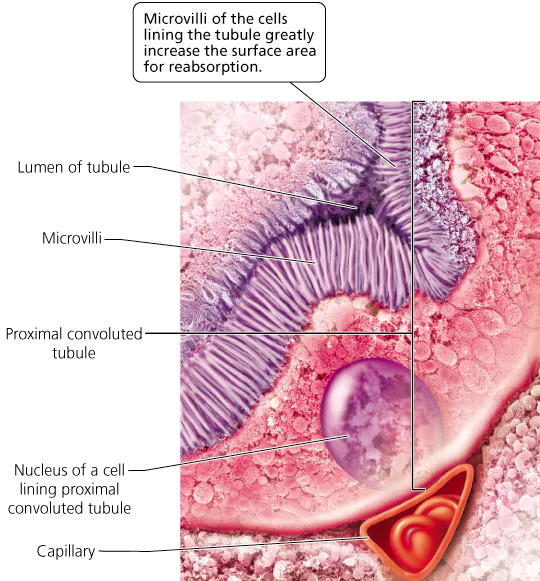
| Substance | Amount Filtered per Day (in liters or grams) | % Reabsorbed (Removed from Filtrate and Returned to Blood) |
|---|---|---|
| Water | 180 L | 99 |
| Glucose | 180 g | 100 |
| Urea | 52 g | 50 |
| Creatinine | 1.6 g | 0 |
| Sodium ions (Na⁺) | 620 g | 99 |
| Potassium ions (K⁺) | 30 g | 93 |
| Bicarbonate (HCO₃⁻) | 275 g | 100 |

Acid–base balance
- Blood pH must stay within 7.35–7.45; small departures can kill. The kidneys, blood buffer systems (which take up H⁺ when it is high and release it when low, such as carbonic acid, Ch. 2) and breathing together hold it.
- The kidneys act three ways:
- secrete H⁺ into the urine, removing acid and raising blood pH;
- reabsorb filtered bicarbonate, sustaining the carbonic acid buffer;
- make new bicarbonate — proximal-tubule cells metabolise the amino acid glutamine to ammonium (NH₄⁺, secreted and excreted) and HCO₃⁻ (which enters the blood).
- So the kidneys indirectly affect breathing rate, which the medulla's chemoreceptors adjust to blood pH (Ch. 14).
Water conservation
- Concentrated urine conserves water and so helps maintain cardiac output and blood pressure. It is made by the 20% of nephrons with long loops, which depend on interstitial fluid (between the cells) growing more concentrated from cortex to medulla, chiefly with NaCl and urea.
- Through the proximal tubule large amounts of water and salt (and nutrients) are reabsorbed — volume falls, concentration barely changes.
- Descending limb — water leaves by osmosis (diffusion needing no ATP, Ch. 3), so the filtrate's solutes, including NaCl, concentrate, peaking at the bend.
- Ascending limb — NaCl is actively transported out into the medulla, but this limb is impermeable to water, so the filtrate becomes dilute — hypotonic to body fluids by the distal tubule. (Hypotonic: lower solute concentration than another fluid; hypertonic: higher; isotonic: the same.)
- Collecting duct — descends again through ever-saltier medulla. It is permeable to water but not salt, and ADH increases its water permeability, so water leaves by osmosis and urea concentrates; some urea leaks into the inner medulla, adding to its concentration; the rest is excreted.
- At most concentrated, urine is hypertonic to blood and to all interstitial fluid except the inner medulla's, to which it is isotonic.

how NaCl leaves the ascending limb; the §16.3 text says large amounts of NaCl are actively transported out of the ascending limb, while Figure 16.8 marks active transport only on its upper part and draws NaCl leaving the lower ascending limb with plain diffusion arrows. The figure also shows urea diffusing into the ascending limb, which the text does not mention.
Hormones and kidney function
- Sweating loses water and salt; salty food adds salt. Three hormones adjust the kidneys to keep both near optimum — aldosterone, ADH and atrial natriuretic hormone.
- Aldosterone — from the adrenal cortex. Increases Na⁺ reabsorption by the distal tubules and collecting ducts by making cells build more sodium pumps and channels; Na⁺ is usually exchanged for K⁺. Water follows sodium, so blood volume and pressure rise and urine is scant and concentrated.
- The trigger is afferent-arteriole pressure, monitored by the juxtaglomerular apparatus, cells where the distal tubule touches the afferent arteriole:
- pressure falls → filtration rate falls → less filtrate in the nephron;
- juxtaglomerular cells release the enzyme renin;
- renin converts angiotensinogen (a liver protein) to angiotensin I; another enzyme makes angiotensin II, the active form;
- angiotensin II makes the adrenal gland release aldosterone → more Na⁺ and water reabsorbed → higher blood volume and pressure → filtration rate and filtrate volume rise again.
- Antidiuretic hormone (ADH) — made by the hypothalamus, stored in and released by the posterior pituitary; sets water reabsorption by the collecting ducts.
- Less water in the blood → thirst and more ADH → ducts more permeable → more water reabsorbed → higher volume and pressure, scant concentrated urine.
- More water in the blood → ADH inhibited → less reabsorbed → lower volume and pressure, copious dilute urine.
- Alcohol inhibits ADH, so an alcoholic drink on a hot day does not restore fluids. Urine-promoting substances are diuretics. Diabetes insipidus — copious dilute urine from ADH deficiency (Ch. 10).
- Atrial natriuretic hormone (ANH) — from right-atrium cells stretched by high blood volume and pressure. Decreases water and Na⁺ reabsorption → lower volume and pressure, copious dilute urine; also inhibits aldosterone and renin.


| Hormone | Effect on Water and Solute Reabsorption in Nephron | Effect on Blood Volume and Pressure | Urine Produced |
|---|---|---|---|
| Aldosterone | Increases reabsorption of Na⁺ by distal convoluted tubules and collecting ducts, resulting in more water following Na⁺ as it moves from filtrate to blood | Increases | Concentrated |
| Antidiuretic hormone (ADH) | Increases permeability to water of collecting ducts, resulting in more water moving from filtrate to blood | Increases | Concentrated |
| Atrial natriuretic hormone (ANH) | Decreases reabsorption of Na⁺ by distal convoluted tubules and collecting ducts, resulting in more Na⁺ and water remaining in filtrate | Decreases | Dilute |
Red blood cells and vitamin D
- The kidneys release erythropoietin, which stimulates red bone marrow to make red blood cells (Ch. 11).
- Prompted by parathyroid hormone, they convert vitamin D (from food, or made by skin in sunlight) to its active form, calcitriol, which promotes absorption and use of calcium and phosphorus. Without enough (as in kidney failure) the intestine absorbs too little, osteoclasts may break down bone to supply them (Ch. 5), and the bones weaken.
16.4Dialysis and Transplant Surgery
pp. 329–330Renal failure
- Renal failure — glomerular filtration falls or stops.
- Acute — abrupt near-total loss over hours or days, with little urine. Causes: severe inflammation, certain drugs, poison, low blood volume from bleeding, or kidney stones blocking urine flow.
- Kidney stones — hard crystals of substances such as calcium or uric acid that precipitate from over-concentrated urine; removed surgically, dissolved with drugs, or shattered by shock waves into passable pieces.
- Chronic — a progressive, often irreversible decline over months or years as disease destroys nephrons, which cannot be replaced; e.g. polycystic kidney disease, inherited, with fluid-filled cysts and tiny holes through the tissue. Early on the surviving nephrons enlarge and compensate; later, nitrogenous wastes build up in the blood. At end-stage about 90% of nephrons are gone and a transplant or machine is needed.
- Consequences of renal failure:
- acidosis — H⁺ is not excreted;
- anemia — no erythropoietin;
- edema — water and salt retained in the tissues;
- hypertension — renin–angiotensin failure plus salt and water retention;
- nitrogenous wastes accumulate.
- Untreated kidney failure kills within days.
Dialysis
- Hemodialysis — artificial devices cleanse the blood of wastes and excess fluid, often an artificial kidney machine. Blood flows from an arm artery into a canister, the hemodialyzer, through tubing of selectively permeable membrane bathed in dialysate: wastes and small molecules cross, blood cells and most proteins are too large. Nutrients are sometimes added to the dialysate, whose composition is controlled to keep the gradients right. The blood returns to an arm vein. Usually about three times a week at a clinic.
- Continuous ambulatory peritoneal dialysis (CAPD) — done at home using the patient's own peritoneum (the abdominal lining) as the membrane: fluid drains from a hanging bag into the abdomen, picks up wastes for a few hours, and is drained and replaced, three or four times a day. The patient moves freely between changes.
- Gentler and steadier than hemodialysis, cheaper and less disruptive — but each change is a chance for bacteria to cause peritonitis.
- Acute failure may need dialysis only until the kidneys recover; chronic failure needs it for life unless a transplant comes.

Transplants
- The kidney was among the first organs transplanted successfully, with dialysis keeping patients alive until a donor is found.
- The main obstacle is rejection by the recipient's immune system (Ch. 13). Best donor: an identical twin — the first success, in 1954, was between twins; next, a close relative. Donating is safe and one kidney suffices, though about 3 in 10,000 US donors die.
- About 90% of kidneys from close relatives still work at 2 years; most come from unrelated deceased donors (often accident victims), and about 75% of those, matched for tissue and blood type, still work at 2 years. Second and third transplants can extend life.
- The recipient's own kidneys are usually left in place (survival is better); the donor kidney goes low in the pelvis, its ureter joined to the bladder and its vessels to the recipient's. The old kidneys come out only if infected or causing problems such as high blood pressure.
- Success depends on lifelong immune-suppressing drugs, usually two or more. One team avoided them: immunosuppressants after surgery, radiation to cut the immune cells able to attack, then blood stem cells from the donor, which settled in the bone marrow and built a hybrid immune system that accepted the kidney; the drugs were then withdrawn.
- Donor kidneys last only about 48–72 hours outside the body, so matching, shipping and surgery must be fast; and kidneys are always scarce, which has led to calls for new donation systems and to an illegal trade in some countries.


16.5Urination
pp. 331The urination reflex
- Urination empties the bladder; it mixes involuntary and voluntary actions. Urine is made around the clock and trickles down the ureters into the bladder for storage.
- The steps:
- at 200 ml or more, stretch receptors in the bladder wall signal along sensory neurons to the lower spinal cord;
- motor neurons return the signal, contracting the bladder's smooth detrusor muscle and relaxing the internal urethral sphincter, a thickening of smooth muscle at the bladder–urethra junction;
- the signal also travels up to the brain, creating the desire to urinate;
- if the time is right, the brain allows voluntary relaxation of the external urethral sphincter, a small band of skeletal muscle farther down the urethra;
- urine exits — or, if not, the bladder keeps storing it.
- Urination is therefore a reflex that can still be started and stopped at will.
- Urinary incontinence — lack of voluntary control over urination.
- Normal under age 2–3, before nerve connections to the external sphincter are complete; toilet training follows when they are.
- In adults: damage to the external sphincter (in men, e.g. during prostate surgery — the prostate surrounds the urethra just below the bladder and adds to semen, Ch. 17); an overactive (spastic) bladder contracting before it is full; urinary infection at any age.
- Stress incontinence — small leaks when a laugh, sneeze or cough suddenly raises abdominal pressure; common and mild.
- Urinary retention — failure to empty the bladder normally: no sensation of needing to go (e.g. after general anesthesia), or a contracted or obstructed urethra. Treated at once with a urinary catheter.


16.6Urinary Tract Infections
pp. 332Causes, symptoms and treatment
- A urinary tract infection (UTI) is microorganisms in the urinary organs. Most bacteria climb the urethra from outside — Escherichia coli, normal in the colon, is the usual one; Chlamydia and Mycoplasma, sexually transmitted, sometimes (Ch. 17a). Some bacteria reach the kidneys through the blood.
- The female urethra is 3–4 cm (1.5 in.), in front of the vagina; the male's about 20 cm (8 in.), opening at the tip of the penis. UTIs are commoner in women, perhaps because of the shorter urethra and because its opening is closer to the anus — wiping back to front can carry fecal bacteria to it (front to back is correct). Intercourse can introduce bacteria; urinating soon after flushes them.
- Symptoms: fever, blood in the urine, painful and frequent urination; lower abdominal pain if the bladder is involved, back pain if the kidneys are.
- Diagnosed by checking urine for bacteria and blood cells; home dipsticks in the first morning urine change colour on detecting nitrite made by bacteria, catching about 90% of UTIs.
- Treated with antibiotics, started promptly and finished, so a lower-tract infection (urethra, bladder) does not reach the kidneys and cause serious damage.

Stop And Think
1Estrogens resemble aldosterone and act similarly on the distal tubules and collecting ducts. How might that explain the water retention many women have as estrogen rises in the menstrual cycle? (§16.3, p. 328)
Like aldosterone, estrogen increases Na⁺ reabsorption; water follows sodium, so more water is retained.
2Why would drinking too little water raise your chance of kidney stones? (§16.4, p. 329)
Little water means concentrated urine, and stones form when calcium or uric acid precipitate from over-concentrated urine.
3Stress incontinence is common late in pregnancy, when the uterus presses on the bladder. What might explain it after childbirth? (§16.5, p. 331)
Childbirth may stretch or damage the external urethral sphincter, and the book names sphincter damage as a cause of adult incontinence. The book does not answer this directly.
Figure Questions
1How does the structure of glomerular capillaries aid filtration? (Figure 16.7, §16.3)
Their fenestrated walls let water and small solutes out easily while keeping red cells in; a wide afferent and narrow efferent arteriole keep glomerular pressure high.
End Of Chapter Questions
1Select the correct order of organs for the path urine takes from its formation to its leaving the body:
a) bladder; urethra; ureter; kidney b) bladder; kidney; ureter; urethra c) kidney; ureter; bladder; urethra d) kidney; urethra; bladder; ureter
c
Kidney makes it, ureter carries it, bladder stores it, urethra releases it. d swaps ureter and urethra.
2Choose the incorrect statement:
a) The interstitial fluid of the inner renal medulla has very high solute concentrations. b) During tubular reabsorption, useful substances move from the blood into the filtrate within the nephron. c) During tubular secretion, excess substances move from the blood into the filtrate within the nephron. d) During glomerular filtration, substances move from the blood into the nephron to form filtrate.
b
Reabsorption runs filtrate → blood; b reverses it. c is the correct direction for secretion.
3Glomerular filtration
a) occurs at the renal corpuscle. b) returns useful substances to the blood. c) occurs along the renal tubule. d) is the last step of three in cleansing the blood.
a
Glomerulus into capsule — the renal corpuscle. b is reabsorption.
4Which of the following substances would normally not pass through the glomerular filter?
a) water b) ions c) red blood cells d) glucose
c
The pores keep red cells in. Glucose (d) is filtered and then fully reabsorbed (Table 16.1).
5Microvilli dramatically increase surface area for reabsorption. In the nephron, microvilli characterize the
a) proximal convoluted tubule. b) collecting duct. c) distal convoluted tubule. d) glomerulus.
a
Proximal-tubule cells have many microvilli; the distal tubule (c) has few or none.
6Which of the following would raise blood pH?
a) reabsorption of H⁺ b) secretion of HCO₃⁻ c) secretion of H⁺ d) reabsorption of glucose
c
Secreting H⁺ removes acid. Reabsorbing H⁺ (a) would lower pH.
7Which of the following hormones results in production of large amounts of dilute urine?
a) atrial natriuretic hormone (ANH) b) erythropoietin c) aldosterone d) antidiuretic hormone (ADH)
a
ANH cuts Na⁺ and water reabsorption. Aldosterone and ADH make concentrated urine.
8Urinary incontinence is
a) lack of voluntary control over the internal urethral sphincter. b) found only in infants and young children. c) lack of voluntary control over urination. d) failure to expel urine from the bladder to a normal degree.
c
The book's definition. d is urinary retention.
9Which of the following substances has the lowest percent reabsorption by nephrons?
a) glucose b) water c) bicarbonate d) urea
d
Urea 50% (Table 16.1); glucose and bicarbonate 100%, water 99%.
10______ is the use of artificial devices to cleanse the blood.
Hemodialysis
§16.4.
11The ______ urethral sphincter is made of ______ muscle and is involuntary. The ______ urethral sphincter is made of ______ muscle and allows voluntary control over urination.
internal; smooth; external; skeletal
§16.5 — internal is a smooth-muscle thickening at the bladder neck; external a skeletal-muscle band farther down. Applying the Concepts — three open questions, p. 335, numbered on.
12Miguel's urine output increases after he drinks beer. Why?
Alcohol inhibits ADH.
Less ADH → collecting ducts less permeable → less water reabsorbed → copious dilute urine (§16.3).
13Li has polycystic kidney disease, which is destroying her kidneys. What will be the health consequences of her chronic renal failure? What are her options for restoring kidney function, and their advantages and disadvantages?
Acidosis, anemia, edema, hypertension and nitrogenous waste build-up. Options: hemodialysis, CAPD, transplant.
Hemodialysis — clinic about 3×/week, disruptive. CAPD — home, gentler, cheaper, mobile, but 3–4 changes a day and peritonitis risk. Transplant — the ultimate hope, but kidneys are scarce, rejection is the obstacle, and immunosuppressants are usually lifelong (§16.4).
14Varian has proteinuria, which his physician thinks hypertension caused. Which region of the nephron was likely damaged? How might proteinuria be diagnosed?
The renal corpuscle's glomerular filter; by urinalysis.
The basement membrane normally holds back large proteins (§16.3); urinalysis tests for normal constituents such as protein in abnormal amounts. The book does not link hypertension to this directly.
Boxed essays
Urinalysis (§16.3, pp. 320-328)
- Urine carries substances from nearly every organ, so a urinalysis — physical and chemical properties plus a microorganism check — gives an overview of health.
- Healthy urine has no microorganisms; bacteria in a properly collected sample usually mean infection and can be cultured to identify them; fungi and protozoans can also be screened for. Contact with an unclean perineal area (between anus and scrotum, or anus and vulva) contaminates a sample.
- Colour — yellow from urobilin, derived from bilirubin, the waste of hemoglobin breakdown (Ch. 11). Beets redden it, asparagus tints it green; concentrated (morning) urine is darker; red with confirmed red blood cells can mean urinary trauma.
- Turbidity — fresh urine is clear; cloudy urine, especially with white blood cells, suggests a UTI.
- pH — about 6; high-protein diets acidify, vegetarian diets alkalinise.
- Specific gravity — density relative to distilled water, a measure of solute concentration and the nephrons' concentrating ability; long-term very concentrated urine lets calcium and uric acid form stones.
- Chemistry — about 95% water. Tests look for abnormal constituents (glucose, red or white blood cells) and normal ones in abnormal amounts (excess protein). Drugs small enough to be filtered are mostly not reabsorbed, and some are secreted, so they show up in urine.
- Questions: why should a woman say she is menstruating when giving a sample? Why might workplaces prefer urine to blood for drug tests?
Kidney Donation and Trafficking (§16.4, p. 333)
- Waiting lists are long in many countries. Living donors are often relatives, sometimes near-strangers; selling organs is illegal in the US.
- Iran pays some living donors legally: a patient seeks a family donor, then waits up to 6 months for a deceased donor, and only then may use a list of paid living donors. About 70% of Iran's transplants are compensated; not open to foreigners.
- Kidney trafficking — buying a kidney illegally, often from donors in developing countries who are coerced or deceived — has prompted interest in legal compensation.
- US deceased donation is opt-in (the person, or failing that close relatives, must consent). Some propose opt-out, or presumed consent — organs available unless the person objected in writing.
- On April 27, 2015 the US list held 134,599 candidates, 109,571 of them for kidneys; many wait years. Sign a donor card, tell your family, note it on your license, and join your state registry.
- Questions: legal compensation for living donors? Switch from opt-in to opt-out?
Kidneys and mental disability (§16.4, p. 333)
- Kidneys are scarce. Should a mental disability disqualify a patient — and what if it comes with heart disease or a weak immune system? How would you allocate kidneys?
Liam's primary aldosteronism (§16.6, p. 332)
- A benign growth on Liam's adrenal cortex overproduces aldosterone. What happens to K⁺, Na⁺, water and blood pressure?
- Aldosterone drives Na⁺ reabsorption in exchange for K⁺ (§16.3): more K⁺ lost in urine, more Na⁺ retained, water follows sodium, and blood pressure rises.
Kidney "cleanses" (p. 335)
- The "detox industry" sells products said to cleanse organs such as the kidneys. A 2014 blog by Dr. Edward F. Group III on the Global Healing Center site recommends purified water, five cleansing drinks and herbal supplements such as Renaltrex — which the site sells.
- Questions: are you convinced a cleanse helps? Do his credentials, or the site selling the supplement, change your view? Find and justify better sources.
Board Work — Lab 14 & 15
The in-lab board sheet, block by block. Handed in at the start of lab on Monday 11/16.
- 1 Lab 14 · Activity 1: Respiratory Anatomy
- 2 Lab 14 · Activity 2: Ventilation & Lung Volumes
- 3 Lab 14 · Activity 3: Gas Exchange & Gas Transport
- 4 Lab 15 · Activity 1: Urinary System — Gross Anatomy
- 5 Lab 15 · Activity 2: Nephron Anatomy & Function
- 6 Lab 15 · Activity 3: Urinalysis & Fluid Balance
1 · Lab 14 · Activity 1: Respiratory Anatomy
Draw
Head and chest from the front: nasal cavity, pharynx shaded in its three regions, larynx with epiglottis, C-ringed trachea, main bronchi branching to 3 right and 2 left lobes, diaphragm. Inset: one alveolus in its capillary net with Type I, Type II cells and a macrophage.
- conducting zone
- respiratory zone
- nares
- nasal septum
- nasal conchae
- sinuses
- nasopharynx
- oropharynx
- laryngopharynx
- larynx
- epiglottis
- glottis
- vocal folds(n) — vocal cords in Ch. 14
- trachea
- hyaline cartilage rings
- main stem bronchi
- bronchioles
- respiratory bronchioles
- alveoli
- respiratory membrane
- Type I / Type II alveolar cells
- surfactant
- macrophages
Write
Respiratory Anatomy
- The respiratory system exchanges gases, provides the sense of smell, and helps keep acid–base homeostasis.
- Conducting zone — nose, nasal cavity, pharynx, larynx, trachea, bronchi, most bronchioles. It filters, warms and moistens air, moves it toward the respiratory zone, and carries air back out.
- Respiratory zone — respiratory bronchioles and alveoli, where gas is exchanged with the pulmonary capillaries.
- Ventilation is inspiration plus expiration.
Nose, Nasal Cavity & Pharynx
- Two nares open into the nasal cavity; their hairs filter the air. The nasal septum divides the cavity in two.
- Pseudostratified ciliated columnar epithelium lines it: mucus traps particles and pathogens, and the cilia beat them toward the throat to be swallowed. The sinuses are hollow bones lined with the same epithelium.
- Nose, nasal cavity and sinuses warm, moisten and filter the air and help form speech; olfactory neurons line the top of the nasal cavity.
- The nasopharynx (behind the nasal cavity) connects to the oropharynx, which opens into the laryngopharynx; the laryngopharynx opens into both the esophagus and the larynx.
Larynx
- The larynx (voice box) is cartilage running from the laryngopharynx and hyoid bone down to the trachea.
- A cartilage flap, the epiglottis, covers the glottis (the opening into the larynx).
- Vocal folds on each side vibrate as air passes, making the sound waves of speech.
Trachea, Bronchi & Bronchioles
- The trachea is a dense connective tissue tube from the larynx to the chest; C-shaped hyaline cartilage rings hold it open even under negative pressure. Its ciliated, mucus-making lining sweeps particles up to the throat.
- It divides into two main stem bronchi, one per lung, which branch to each lobe — 3 right, 2 left — then into smaller and smaller airways.
- As the airways narrow, cartilage decreases, smooth muscle increases, and columnar epithelium becomes cuboidal.
- Bronchioles, the smallest conducting airways, have no cartilage and much smooth muscle; bronchoconstriction and bronchodilation regulate airflow to the alveoli.
Respiratory Zone
- Terminal bronchioles divide into respiratory bronchioles, which open into thin-walled alveoli wrapped in pulmonary capillaries. Gas exchange there is external respiration.
- Respiratory membrane — the alveolus's simple squamous epithelium and basement membrane, against the capillary's simple squamous endothelium and basement membrane.
- Type I cells line most of the alveolus and form the respiratory membrane; Type II cells make surfactant, an oily secretion that keeps alveoli from collapsing; macrophages remove debris.
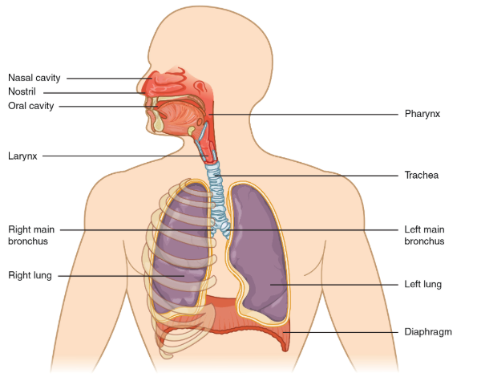
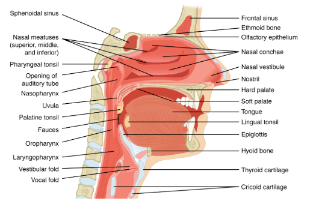
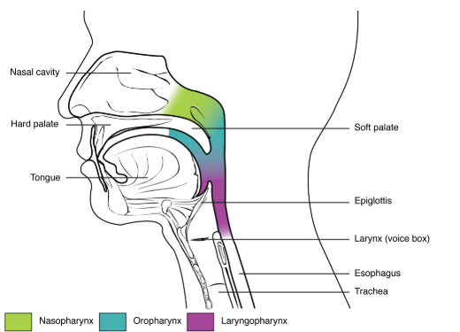
what lines the pharynx; the lab says the nasopharynx, "like the rest of the pharynx", is lined by stratified squamous epithelium, while the same lab says the nasal cavity, sinuses and trachea carry pseudostratified ciliated columnar epithelium; Ch. 14 does not name the pharynx's epithelium.
2 · Lab 14 · Activity 2: Ventilation & Lung Volumes
Draw
Two boxes of bouncing balls — piston up (volume up, pressure down) and piston down (volume down, pressure up). Beside them, two torsos: inspiration (cavity expands, diaphragm contracts and flattens) and expiration (cavity shrinks, diaphragm domes). Then the spirometer trace with every volume bracketed.
- Boyle's law
- P₁V₁ = P₂V₂
- pressure gradient
- pleural membranes
- pleural fluid
- negative pressure
- positive pressure
- diaphragm
- external intercostals
- internal intercostals
- accessory muscles
- inspiration
- expiration
- spirometry
- TV
- IRV
- ERV
- VC
- RV
- TLC
Write
Ventilation
- Ventilation moves air into and out of the lungs. Air flows down a pressure gradient, high to low. Atmospheric pressure stays constant, so the lungs change their own pressure by changing their volume.
- Boyle's law: when volume increases pressure decreases, and when volume decreases pressure increases (P₁V₁ = P₂V₂). Balls bouncing in a box hit the walls harder when the box is smaller.
- Pleural fluid and negative pressure hold the pleural membranes together, so the lungs adhere to and move with the thoracic wall: a bigger thoracic cavity makes bigger lungs.
- Negative pressure — lung pressure below atmospheric, so air flows in. Positive pressure — lung pressure above atmospheric, so air flows out.
Inspiration
- Brings O₂-rich, CO₂-poor air to the alveoli: the thoracic cavity enlarges, lung pressure drops below atmospheric, and air flows in.
- Quiet: the diaphragm contracts and moves down; the external intercostals contract and pull the rib cage up and out.
- Forced: both contract harder, and accessory muscles enlarge the cavity further — sternocleidomastoid, pectorals, serratus anterior, latissimus dorsi, scalenes.
Expiration
- Removes O₂-poor, CO₂-rich air: the thoracic cavity shrinks, lung pressure rises above atmospheric, and air flows out.
- Quiet: completely passive — the diaphragm relaxes back to its dome, and the external intercostals relax so the rib cage returns to rest.
- Forced: the internal intercostals and abdominal muscles shrink the cavity further, raising pressure and forcing out more air. Forced breathing speeds the exchange of fresh air for used air.
Spirometry: Lung Volumes
- Spirometry measures lung volumes; a change can signal disease.
- If vital capacity falls, less fresh air replaces air that has already given up O₂ and taken on CO₂.
- Vital capacity is not total lung capacity — you never exhale all your air.
| Volume | What it is | Size |
|---|---|---|
| Tidal volume (TV) | air moved in or out in a quiet breath | ~500 mL |
| Inspiratory reserve (IRV) | most you can inhale above a normal breath | 1900–3300 mL |
| Expiratory reserve (ERV) | most you can exhale after a normal breath out | ~1000 mL |
| Vital capacity (VC) | IRV + TV + ERV — all exchangeable air | ♂ 4800, ♀ 3400 mL |
| Residual volume (RV) | air left after the hardest exhalation | 1100–1200 mL |
| Total lung capacity (TLC) | VC + RV — everything in the lungs | ♂ 6000, ♀ 4500 mL |
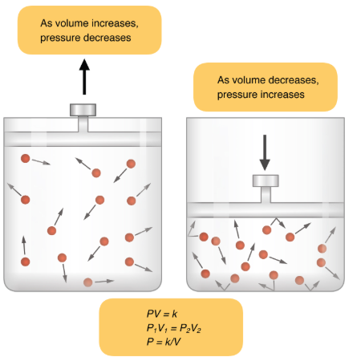
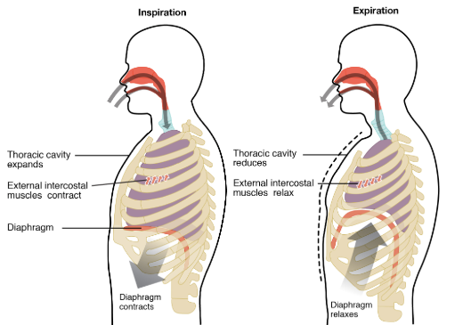
3 · Lab 14 · Activity 3: Gas Exchange & Gas Transport
Draw
Lungs on top, tissues at the bottom, blood running between them. Write PO₂ and PCO₂ at each stop, with an O₂ arrow and a CO₂ arrow at each exchange site pointing high to low. Beside the blood, a bar split for O₂ (98.5 / 1.5) and for CO₂ (70 / ~20 / 7–10).
- partial pressure (Px)
- Dalton's law
- mmHg
- respiratory membrane
- external respiration
- internal respiration
- pulmonary capillaries
- systemic capillaries
- hemoglobin
- heme
- oxyhemoglobin
- carbaminohemoglobin
- bicarbonate (HCO₃⁻)
- carbonic anhydrase
Write
Gas Transport
- Partial pressure (Px) — the pressure one gas exerts in a mixture. Dalton's law: total pressure equals the sum of the partial pressures.
- Px = total pressure × the gas's percentage: PO₂ = 760 mmHg × 0.209 = 158.8 mmHg; PCO₂ = 760 × 0.0004 = 0.3 mmHg.
- Inhaled air mixes with residual air, so the alveolus holds less O₂ than the atmosphere (O₂ keeps moving in) and more CO₂ (CO₂ moves out of the tract).
External Respiration
- Gas exchange between the alveoli and the pulmonary capillaries, across the very thin respiratory membrane. The partial-pressure gradients set the direction.
- CO₂ diffuses from the capillary (45 mmHg) into the alveolus (40); O₂ diffuses from the alveolus (104) into the capillary (40). Blood leaving the lungs has equilibrated with the alveoli.
Internal Respiration
- Gas exchange between the systemic capillaries and the tissues.
- CO₂ diffuses from the tissues (45 mmHg) into the capillaries (40); O₂ diffuses from the capillaries (100) into the tissues (40). Blood returning to the heart is low in O₂ and high in CO₂.
Gas Transport
- O₂ dissolves poorly in water — why we cannot breathe underwater, and why O₂ needs a steep gradient to enter the pulmonary capillaries.
- 98.5% of O₂ binds hemoglobin in RBCs: O₂ binds the iron of each heme, and with four subunits, each hemoglobin carries four O₂. 1.5% dissolves in plasma.
- CO₂ dissolves much better: 7–10% dissolved in plasma, just over 20% bound to hemoglobin (carbaminohemoglobin), ~70% as bicarbonate (HCO₃⁻), which carbonic anhydrase makes inside RBCs.
- Bicarbonate buffers the blood against sharp changes in pH.
| Where | PO₂ | PCO₂ |
|---|---|---|
| Atmosphere | 158.8 | 0.3 |
| Alveoli | 104 | 40 |
| Blood arriving at the lungs | 40 | 45 |
| Blood leaving the lungs / systemic arteries | 100 | 40 |
| Tissues | 40 | 45 |
| Blood leaving the tissues | 40 | 45 |
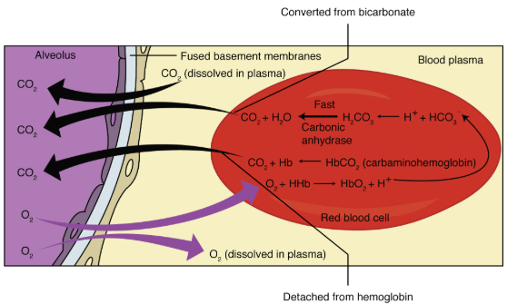
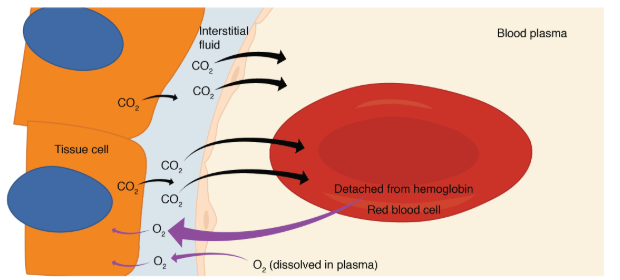
4 · Lab 15 · Activity 1: Urinary System — Gross Anatomy
Draw
Torso with both kidneys (adrenal on top), ureters, bladder, urethra. Beside it, a kidney cut in half: capsule, cortex, pyramids, renal columns, minor and major calyces, renal pelvis, ureter, renal artery and vein at the hilum.
- kidney
- ureter
- bladder
- urethra
- micturition
- nitrogenous wastes
- calcitriol
- erythropoietin (EPO)
- retroperitoneal
- renal cortex
- renal medulla
- medullary pyramids
- minor calyx
- major calyx
- renal pelvis
- renal hilum
- renal artery
- renal vein
Write
Urinary Anatomy
- 2 kidneys, 2 ureters, 1 bladder, 1 urethra. The ureters carry urine from the kidneys to the bladder, which stores it; in micturition the bladder contracts and expels urine through the urethra.
- The male urethra is much longer — through the prostate and penis — and is shared by the urinary and reproductive systems. The female urethra is much shorter and opens anterior to the vagina.
- The kidneys do the rest of the system's work:
- filter the blood, removing nitrogenous wastes (nephrons modify the filtrate; drugs are secreted — Block 5);
- produce active vitamin D₃, calcitriol;
- help regulate pH and calcium;
- are the target of the hormones that regulate fluid, electrolytes and blood pressure (Block 6);
- release erythropoietin (EPO) when oxygen is low; EPO stimulates the bone marrow to make and release more RBCs.
Kidney Anatomy
- High on the dorsal abdomen, outside the peritoneum (retroperitoneal).
- Cortex — most nephrons and their peritubular capillaries. Medulla — the loops of Henle of juxtamedullary nephrons, the collecting ducts and the vasa recta; it is divided into medullary pyramids.
- Collecting ducts empty into a minor calyx; minor calyces empty into a major calyx; major calyces empty into the renal pelvis, which empties into the ureter. Once filtrate leaves the collecting duct it is no longer modified — it is urine.
- The renal artery brings blood from the aorta; the renal vein carries it to the inferior vena cava.
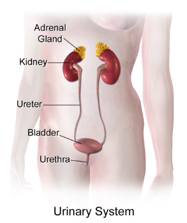
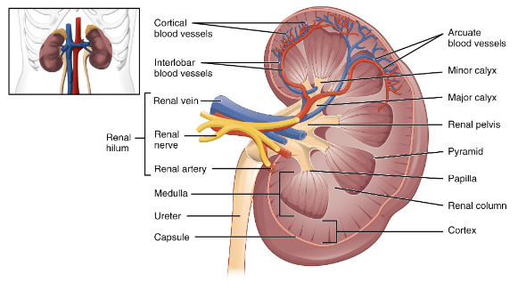
5 · Lab 15 · Activity 2: Nephron Anatomy & Function
Draw
One nephron in order: afferent arteriole into the glomerulus inside Bowman's capsule, efferent arteriole out; PCT; loop of Henle down and back up; DCT touching the afferent arteriole (mark the JGA); collecting duct. Wrap peritubular capillaries round it. Mark where filtration, reabsorption and secretion happen.
- nephron
- juxtamedullary nephron
- glomerulus
- Bowman's capsule
- renal corpuscle
- afferent arteriole
- efferent arteriole
- PCT
- microvilli
- loop of Henle
- descending limb
- ascending limb
- DCT
- collecting duct
- juxtaglomerular apparatus (JGA)
- macula densa
- renin
- peritubular capillaries
- vasa recta
- fenestrations
- podocytes
- pedicels
- filtration slits
- filtration membrane
- aquaporins
Write
The Nephron
- The nephron is the kidney's functional unit. Most sit in the cortex; the loops of juxtamedullary nephrons reach into the medulla.
- Renal corpuscle = the glomerulus (a capillary tuft) + Bowman's capsule, which collects the filtrate. Blood enters by the afferent arteriole and leaves by the efferent arteriole.
- PCT — simple cuboidal cells with microvilli, which increase the surface for reabsorption. Drugs, H⁺ and some nitrogenous wastes are also secreted here.
- Loop of Henle — the descending limb is permeable only to water, so much water is reabsorbed, drawn by the salty medulla. The ascending limb is impermeable to water; it reabsorbs Na⁺, Cl⁻ and K⁺ by active transport.
- DCT — loops back to the corpuscle and afferent arteriole. It is the site of facultative (hormone-dependent) water reabsorption; hormones adjust ion secretion and reabsorption here and in the collecting duct.
- Juxtaglomerular apparatus (JGA) — cells where the DCT meets the afferent arteriole. They regulate glomerular blood flow, detect Na⁺ changes in the filtrate, and secrete renin to start RAAS.
- Many nephrons drain into one collecting duct, which runs from cortex through medulla into larger ducts, the calyces and the renal pelvis.
- The efferent arteriole carries blood to the peritubular capillaries around the cortical nephron; they take up reabsorbed substances and drain to the renal vein. In juxtamedullary nephrons it also forms the vasa recta, which runs beside the loop in the opposite direction.
Nephron Functions
- Three: filtration, reabsorption and secretion.
Filtration
- Happens in the corpuscle. The glomerulus's fenestrated capillaries are extra-permeable; blood pressure forces fluid and solutes out, like water from a hose full of holes.
- The filtration membrane has three layers: fenestrations, the basement membranes of both cells, and the filtration slits between the foot processes (pedicels) of podocytes. The slits are the narrowest part — they keep proteins, cells, platelets and large substances in the blood.
- Bowman's capsule catches the filtrate and sends it to the PCT. Not all blood is filtered; the rest leaves by the efferent arteriole.
- Filtration rate depends on pressure in the afferent arteriole. The JGA — juxtaglomerular cells of the afferent arteriole plus macula densa cells of the DCT — monitors it, and releases renin when blood pressure or volume is low, Na⁺ in the DCT is low, or sympathetic nerves stimulate it.
Reabsorption
- Moves solutes and water from the filtrate back into the blood, by simple diffusion, facilitated diffusion or active transport, in every part of the tubule and the collecting ducts.
- The PCT reabsorbs the most, and is the only site for organic molecules — glucose, amino acids, vitamins, lactate. Most ions are reabsorbed in the PCT, ascending limb or DCT; hormone-dependent ion reabsorption happens mostly in the DCT and collecting ducts.
- Water follows passively everywhere except the thick ascending limb, which is impermeable to keep the medulla's gradient. Without aquaporins, water reabsorption is inefficient.
Secretion
- Moves solutes from the blood into the filtrate, always by active transport, in every part of the tubule and the collecting ducts.
- The PCT secretes H⁺, NH₄⁺, creatinine and drugs such as penicillin and morphine. Urea is secreted into the ascending limb and reabsorbed elsewhere. Aldosterone drives K⁺ and H⁺ secretion in the DCT and collecting duct, where other drugs are secreted too.
| Substance | PCT | Loop of Henle | DCT | Collecting duct |
|---|---|---|---|---|
| Glucose, amino acids | ~100% reabsorbed | |||
| Creatinine | secreted | |||
| Urea | 50% reabsorbed; also secreted | secreted | reabsorbed (medulla) | |
| Sodium | 65% reabsorbed, active | 25% (thick ascending), active | 5%, active | 5%, aldosterone |
| Water | 67%, osmosis | 15% (descending) | 8% if ADH | variable, ADH |
| Potassium | 65% reabsorbed | 20% (thick ascending) | secreted | secreted, aldosterone |
| H⁺ | secreted | secreted | secreted | |
| HCO₃⁻ | 80–90% reabsorbed | reabsorbed | reabsorbed | |
| Calcium | reabsorbed | reabsorbed (thick ascending) | reabsorbed if PTH |
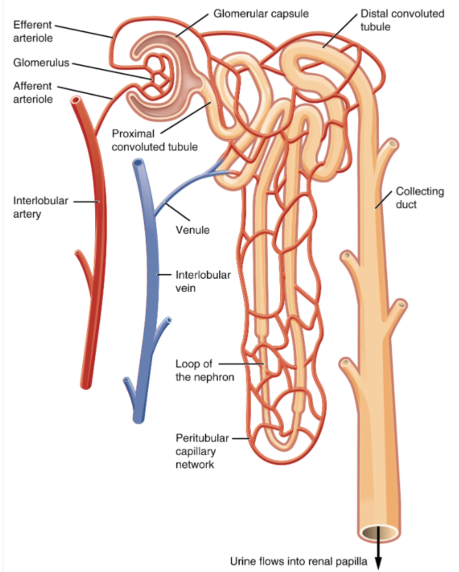
how many nephrons a kidney has; the lab says "Each kidney contains billions of nephrons", while Ch. 16 §16.3 says 1 million to 2 million per kidney.
whether secretion is always active; the lab's text says secretion "always occurs through active transport", while its own table lists H⁺ and NH₄⁺ in the PCT as "Secreted; diffusion". Ch. 16 says H⁺, K⁺ and NH₄⁺ are actively transported.
where urea enters the loop; the lab's text says urea is secreted in the ascending limb, its table says "Secretion, diffusion in descending limb", and Ch. 16 Figure 16.8 draws urea diffusing into the ascending limb.
6 · Lab 15 · Activity 3: Urinalysis & Fluid Balance
Draw
The urine colour strip from pale (hydrated) to dark (dehydrated). Then RAAS as one line across the page: liver angiotensinogen, kidney renin, angiotensin I, lung ACE, angiotensin II, with arrows to vessels, adrenal cortex (aldosterone) and hypothalamus (ADH, thirst). ANP from the right atrium working against it.
- urinalysis
- urochrome
- urine specific gravity (USG)
- aquaporins
- aquaporin I / II
- obligatory / facultative reabsorption
- ADH (vasopressin)
- aldosterone
- mineralocorticoid
- hyperkalemia
- acidosis
- RAAS
- renin
- angiotensinogen
- angiotensin I
- ACE
- angiotensin II
- ANP(n) — ANH in Ch. 16
Write
Urinalysis
- Assesses the urinary tract and kidney function. Normal urine is clear and light yellow from urochrome, made from the breakdown of RBCs; dehydration and some foods change the colour.
- The filtration slits leave only trace protein, RBCs and WBCs in urine. Cloudy urine usually means large molecules (proteins) or cells (bacteria, leukocytes).
Urine Specific Gravity
- USG measures the solutes in urine: 1.003–1.032; water is 1.000. Dehydrated — concentrated, darker urine, higher USG. Hydrated — dilute, lighter urine, lower USG.
- The kidneys filter ~180 L a day and reabsorb most of the water by reabsorbing solutes — water follows, mostly by facilitated diffusion through aquaporins.
- Obligatory reabsorption — most water, in the PCT and loop of Henle, through aquaporin I. Facultative reabsorption — in the DCT and collecting duct, through aquaporin II; it varies with need (more when dehydrated, less when hydrated), set by ADH, aldosterone, ANP and angiotensin II.
- Positive charges inside an aquaporin block electrolytes but let water through by osmosis.
Antidiuretic Hormone (ADH)
- Vasopressin — a peptide made in the hypothalamus, stored in and released from the posterior pituitary.
- Rising blood osmolarity or angiotensin II stimulates hypothalamic neurons to release it.
- In the kidney, ADH inserts aquaporin II into the DCT and collecting duct, so more water is reabsorbed: concentrated urine, more blood volume, lower osmolarity. Normal osmolarity means less ADH.
- On blood vessels, ADH causes vasoconstriction, also raising blood pressure.
Aldosterone
- Water cannot be reabsorbed without a solute gradient, and Na⁺ (with Cl⁻) builds it. Three hormones regulate Na⁺ reabsorption: aldosterone, angiotensin II and ANP.
- Aldosterone, a mineralocorticoid from the adrenal cortex, acts on the DCT and collecting ducts: it stimulates Na⁺ reabsorption and K⁺ and H⁺ secretion. Water follows Na⁺, so urine is concentrated.
- It is released in response to ACTH, high K⁺ (hyperkalemia), high H⁺ (acidosis) and angiotensin II.
Angiotensin II
- Formed by RAAS when blood pressure or volume is low, or Na⁺ is low.
- JGA cells release renin; renin converts angiotensinogen (made by the liver) into angiotensin I; ACE, made by lung endothelial cells, converts angiotensin I into angiotensin II.
- Angiotensin II causes Na⁺ and Cl⁻ reabsorption in the PCT, stimulates the adrenal cortex to release aldosterone, stimulates the hypothalamus to release ADH and trigger thirst, and causes vasoconstriction. Net result: more water reabsorbed, concentrated urine, higher blood pressure.
Atrial Natriuretic Peptide (ANP)
- A peptide released by right-atrium cardiac myocytes when high blood volume stretches the atrium.
- ANP decreases Na⁺ reabsorption in the DCT and collecting ducts, inhibits renin and causes vasodilation.
- Less Na⁺ reabsorbed means less water reabsorbed: dilute urine (lower USG) and lower blood volume. As volume returns to normal, less ANP is released.
| Characteristic | Normal value |
|---|---|
| Color | pale yellow to deep amber |
| Odor | odorless |
| Volume | 750–2000 mL / 24 h |
| pH | 4.5–8.0 |
| Specific gravity | 1.003–1.032 |
| Osmolarity | 40–1350 mOsmol/kg |
| Urobilinogen | 0.2–1.0 mg/100 mL |
| White blood cells | 0–2 per high-power field |
| Protein | none or trace |
| Bilirubin | < 0.3 mg/100 mL |
| Leukocyte esterase, ketones, nitrites, blood, glucose | none |
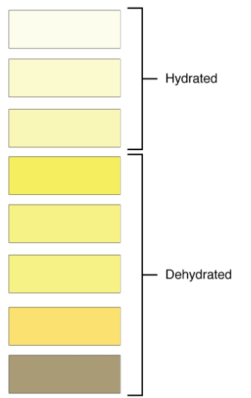
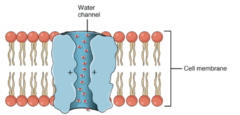
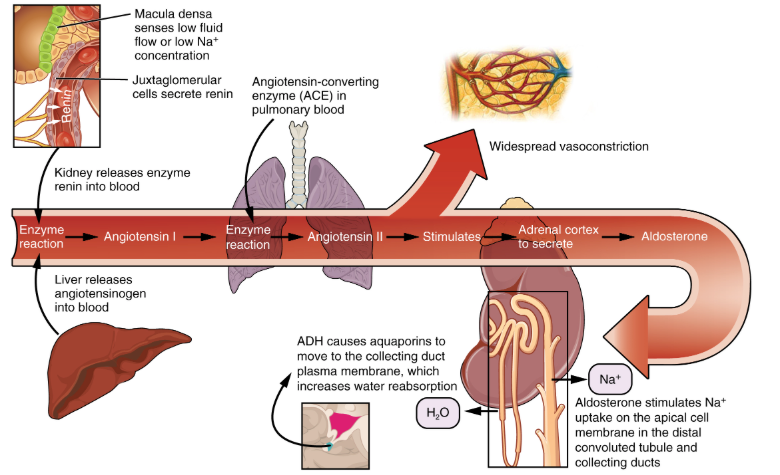
what pigment colours urine; the lab says urine is yellow from urochrome, "from the break down of red blood cells", while Ch. 16's Urinalysis essay says the colour comes from urobilin, made from pigments derived from bilirubin.
where ADH acts; the lab says ADH inserts aquaporin II in the DCT and collecting ducts, while Ch. 16 §16.3 and Table 16.2 say ADH increases water permeability of the collecting ducts only.
Lecture 1 — Mon 11/16
Nothing here yet.
What goes here
Whalen's transcript, outlined section by section with the slide count kept on each one. Slide count is the emphasis signal for the exam.
Expected Mon 11/16.
Drop the source in weeks/week-15/sources/lectures/, then run /ingest 15.
Lecture 2 — Wed 11/18
Nothing here yet.
What goes here
Whalen's transcript, outlined section by section with the slide count kept on each one. Slide count is the emphasis signal for the exam.
Expected Wed 11/18.
Drop the source in weeks/week-15/sources/lectures/, then run /ingest 15.
The week, told once
Nothing here yet.
What goes here
One account of the week across every source, a cram list, and the table of where the sources disagree.
Build this last, once the other tabs are filled.
Drop the source in weeks/week-15/content/synth.md, then run /ingest 15.
Where the sources disagree
Collected automatically from every CONFLICT :: callout in this week's content, plus any rows declared in synth.md. Lecture and lab beat the textbook — but nothing here is resolved for you.
| Point | Textbook | Lab / lecture | Use | From |
|---|---|---|---|---|
| which region the larynx and epiglottis belong to | the §14.1 text puts only the nose and pharynx in the upper respiratory system and lists the larynx and epiglottis in the lower, while Table 14.1 lists Epiglottis and Larynx under "Upper respiratory system" and Figure 14.2 groups them under its "UPPER RESPIRATORY SYSTEM" heading. | ch14.md | ||
| whether the medulla's chemoreceptors sense low oxygen | the §14.4 text says low oxygen is sensed only by the chemoreceptors in the aortic and carotid bodies, while Figure 14.12's label for the medulla oblongata says its chemoreceptors respond to rising CO₂ "and lowered blood level of oxygen". | ch14.md | ||
| what the medulla's rhythm generator is called | the §14.4 text calls it the breathing (respiratory) center with inspiratory and expiratory areas, while Highlighting the Concepts (p. 284) calls it the "rhythmicity area". Same structure, two names. | ch14.md | ||
| how NaCl leaves the ascending limb | the §16.3 text says large amounts of NaCl are actively transported out of the ascending limb, while Figure 16.8 marks active transport only on its upper part and draws NaCl leaving the lower ascending limb with plain diffusion arrows. The figure also shows urea diffusing into the ascending limb, which the text does not mention. | ch16.md | ||
| what lines the pharynx | the lab says the nasopharynx, "like the rest of the pharynx", is lined by stratified squamous epithelium, while the same lab says the nasal cavity, sinuses and trachea carry pseudostratified ciliated columnar epithelium; Ch. 14 does not name the pharynx's epithelium. | board.md | ||
| how many nephrons a kidney has | the lab says "Each kidney contains billions of nephrons", while Ch. 16 §16.3 says 1 million to 2 million per kidney. | board.md | ||
| whether secretion is always active | the lab's text says secretion "always occurs through active transport", while its own table lists H⁺ and NH₄⁺ in the PCT as "Secreted; diffusion". Ch. 16 says H⁺, K⁺ and NH₄⁺ are actively transported. | board.md | ||
| where urea enters the loop | the lab's text says urea is secreted in the ascending limb, its table says "Secretion, diffusion in descending limb", and Ch. 16 Figure 16.8 draws urea diffusing into the ascending limb. | board.md | ||
| what pigment colours urine | the lab says urine is yellow from urochrome, "from the break down of red blood cells", while Ch. 16's Urinalysis essay says the colour comes from urobilin, made from pigments derived from bilirubin. | board.md | ||
| where ADH acts | the lab says ADH inserts aquaporin II in the DCT and collecting ducts, while Ch. 16 §16.3 and Table 16.2 say ADH increases water permeability of the collecting ducts only. | board.md | ||
Source dots: textbook · lab · lecture.